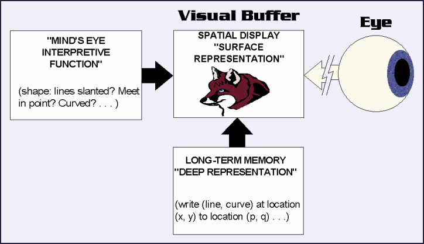
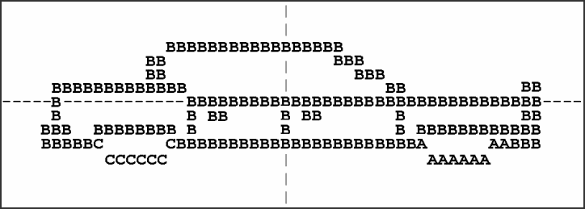
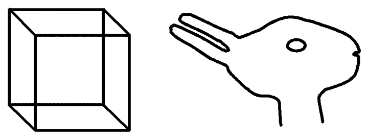

Supplement to Mental Imagery
The Quasi-Pictorial Theory of Imagery, and its Problems
The basic functional architecture of Kosslyn's theory is shown in figure 1. This depicts what might be happening when someone considers the question of whether a fox has pointed ears: by first constructing a mental image of a fox, and then examining the ears in the image. (This, for Kosslyn, is prototypical of the sorts of task for which imagery is normally used in cognition).
| 
Figure 1 |
As the diagram shows, the data from which images may be constructed are taken to be stored in Long Term Memory in the form of deep representations, “propositional” descriptions of the visual scene, presumably not dissimilar to the sorts of description envisaged by Pylyshyn.[1] However, as Kosslyn sees it, these are not directly available to consciousness. They are analogous to the files in which data is saved by a computer graphics program, and on the basis of which actual, viewable pictures are constructed on the screen of the computer monitor. When we form a mental image a quasi-picture or surface representation is constructed, on the basis this stored information, on a functionally defined surface that Kosslyn calls the visual buffer. This buffer is also supposed to be a stage in perceptual visual information processing (similar in function to the 2½D sketch of Marr's (1982) theory of vision[2]), when it would receive its input from the eyes instead of from the Long Term Memory store. Once the quasi-picture is established on the buffer it is available to consciousness as an image, and, furthermore, information that was merely implicit in the deep representation (such as the pointedness of the fox's ears, in the depicted example) can be extracted from it by a postulated mind's eye function. No doubt we are not supposed to think of this mind's eye as literally seeing the image, but it is needed to read and interpret the buffer's surface display. A principal function of images in cognition, as Kosslyn sees it, is to enable ready access to visuo-spatial features and relations of this sort, features or relations that might otherwise be very hard to infer from the “propositional” (mentalese) description.
Kosslyn & Shwartz (1977, 1978) developed a computer simulation model of key parts of Kosslyn's theory (not including the mind's eye function), and its instantiation of the surface representation, the model for the mental image itself, is revealing. Figure 2 was produced by selectively filling cells in a rectangular array or matrix, which models the visual buffer of the underlying theory. Note that certain cells contain different letters. Kosslyn plausibly assumes that images fade over time, and successive letters of the alphabet represent older, successively more faded portions of the image. The cells, then, are not simply filled or unfilled, they contain symbols representing qualitative features of the image at that point. It is what Tye (1991) calls a “symbol filled array”. The theory assumes that each cell might contain multiple symbols, representing such things as color, 3-D depth and the presence of edges (Tye, 1991; Kosslyn, 1994) (although none of this, beyond the degree of “fading”, was implemented in the simulation).

Figure 2
Simulated image (surface
representation) of a car, as generated by the Kosslyn &
Shwartz (1977) program.
The array representation is constructed from a “deep representation” description, stored in the computer's equivalent of long term memory (as in figure 1 – the program had just two “images” hand-coded in: a car, as shown in figure 2, and a chair, in similar vein), and can thus be readily manipulated in various ways. It can be redrawn at various different sizes, positions and orientations on the buffer, and with varying amounts of detail included. This allows Kosslyn to account for the rotation, scanning, and size/inspection time effects which particularly interest him (see section 4.3). He can also consistently explain the mnemonic properties of imagery via a version of Dual Coding theory (Kosslyn, Holyoak, & Huffman, 1976).
It is important to remember, however, that the surface representation is a quasi-picture or functional picture, rather than a picture in the fully literal sense (see Tye, 1991). The real model for the mental image is not what is displayed on the computer screen, or printed out by the program. These representations, after all, are not available for further processing (such as by some mind's eye function) within the computer. They are just there for the benefit of human spectators. The real model for the mental image is the underlying array representation in the computer's memory, physically instantiated as electronic states in RAM chips. Image manipulations are carried out on this array, and merely mirrored on the screen or printout. But the array representation in the computer (and, its counterpart, if it exists, in the brain) is not in itself visible, like a real picture would be. Indeed, the representations of cells that appear adjacent in the screen display or printout need not even be in physically adjacent sections of RAM (though they might be). All that matters is that they be treated as if they were adjacent by the computational routines which form, transform and inspect the array (Kosslyn, 1980).[3]
Moreover, if, as suggested, each cell in the array holds several symbols, for various represented qualities, there is no need for even the symbols within a single cell to be represented in physically close memory elements. We might have multiple arrays, one for each sort of quality, so long as the accessing routines treat them as a single, superposed, array with multiple symbols in each cell. This is relevant, because in Kosslyn's more recent, neuropsychological version of the theory the visual buffer is taken to be composed of multiple arrays, instantiated in the multiple, specialized, retinotopically mapped areas of visual cortex (the primary visual cortex, V1, and other, adjacent visual areas) that are to be found in the brain's occipital cortex, at the back of the head (Kosslyn, 1994, 2005; Kosslyn, Ganis, & Thompson, 2001; Kosslyn, Thompson, & Ganis, 2006).[4]
An interesting variant of the two-dimensional array model of Kosslyn & Shwartz is proposed by Pinker (1988), who argues that a three-dimensional array will better incorporate the evidence that suggests that the spatial properties of imagery extend to the third dimension (Shepard & Metzler, 1971; Pinker & Kosslyn, 1978; Pinker, 1980; Pinker & Finke, 1980; Kerr, 1987). (Perhaps this might be called a quasi-sculptural theory.) However, this idea seems to have attracted little attention, perhaps because it appears to be inconsistent with Kosslyn's ideas about the neural retinotopic maps, which are necessarily two-dimensional.
The implementational details of the Kosslyn & Shwartz computer model, such as the fact that the points on the image are plotted with polar co-ordinates, do not matter very much. Nor, indeed, does the crudity of the images produced (as seen in figure 2). The point of the model is simply to provide a concrete illustration of the theory, and to show that, since it can be implemented, this part of the theory does not contain an undischarged homunculus (Dennett, 1978 ch. 7), that would render it non-explanatory. (Of course, the model does not show that there is no undischarged homunculus in unimplemented parts of the theory, such as the mind's eye function, which is where we would most likely expect him to be lurking.) Several different ways of computationally implementing (symbol filled) array theories of imagery have been proposed by AI researchers since the original Kosslyn & Shwartz work: some connectionist (e.g. Julstrom & Baron, 1985; Mel, 1986, 1990; Stucki & Pollack, 1992), and some not (e.g. Glasgow & Papadias, 1992; Glasgow, 1993). These all have interesting features, but none attempt the psychological range of Kosslyn's model. We must, of course, look to neuroscience for an account of how quasi-pictorial imagery might actually be implemented, and that is what Kosslyn has been doing over the last couple of decades (e.g., 1988, 1994, 2005; Kosslyn, Thompson, & Ganis, 2006).
There has been much dispute between experimentalists over whether the brain imaging evidence (mostly fMRI and PET scans) supports the contention that V1, the primary visual cortex (which is by far the largest retinotopically mapped area of the visual cortex, with, by some distance, the most detailed map) is preferentially activated during visual imagery. Certainly many experiments have found that V1 activity is elevated during imagery, but many others have found no sign of this, and instead find elevated activity in other brain areas, often ones that are not retinotopically mapped at all (see Kosslyn & Thompson, 2003, for review ). Kosslyn & Thompson (2003) suggest that these apparently conflicting findings might be reconciled if the activation level of V1 depends upon the sorts of task that the experimental subjects are being asked to do with their imagery: Tasks that do not require attention to the detailed geometric shape of imagined objects, they suggest, may not activate V1, but may still activate the other (low resolution) retinotopically mapped areas such as those responsible for processing color, or visual motion, or spatial layout information (see Mazard et al., 2004).
There is, however, a further empirical difficulty in the way of the identification of the retinotopically mapped areas with the visual buffer of Kosslyn's theory. It appears that people can experience vivid visual imagery even when at least some of the relevant parts of the retinotopically mapped areas in their brain have been damaged. There are many studies of people who are blind in all or part of their visual field precisely because the corresponding part of V1 (or sometimes other, nearby retinotopically mapped areas) has been destroyed, but who, nevertheless, seem either to have normal visual imagery, or, in some cases, to experience well-formed “hallucinations” (i.e., particularly vivid, spontaneous imagery) specifically in those parts of the visual field where they are thus blinded (Bridge et al., 2012; Zago et al., 2010; Dulin et al., 2008; Ashwin & Tsaloumas, 2007; Kleiter et al., 2007; Ramachandran & Hirstein, 1997; Roland & Gulyàs, 1994; Chatterjee & Southwood, 1995; Goldenberg et al., 1995; Grüsser & Landis, 1991 pp. 156-157; Kölmel, 1985; Lance, 1976; see also Servos & Goodale, 1995). This strongly implies that, even if imagery is sometimes accompanied by activation of the V1 map (and/or other occipital retinotopically mapped visual areas), it cannot be dependent upon (let alone identical with) such activation.
But even if it were a fact that retinotopically mapped areas of the brain are always active during visual imagery (which , as we have just seen, it is not), is that strong evidence in favor the quasi-pictorial theory? Clearly Kosslyn himself thinks so, but Pylyshyn still demurs. The issue, he points out (Pylyshyn, 2002b, 2003b; see also: Abell & Currie, 1999; Thomas, 1999b; Dennett, 2002), is not whether certain 2-D patterns of activation (corresponding to potential patterns of retinal stimulation) exist in the brain, but whether such patterns (qua patterns) play a causal role in generating the behaviors that we see in experiments on imagery (and, we might add, although Pylyshyn does not, in generating quasi-visual experiences). Elevated activity in the retinotopic maps (if and when when it does occur) might be no more than a side-effect of the brain processes that are truly responsible for imagery. Pylyshyn argues that, in fact, the amount of information that can be represented at any one moment in the retinotopic maps is not sufficient to support most of the experimental imagery effects that quasi-pictorial theory purports to explain (Pylyshyn, 2002b; cf. Ingle, 2002). Indeed, during visual perception itself the information contained in the retinotopic maps at any one moment is not sufficient to explain our experience of the visual scene, or, indeed, our capacity to visually guide our behavior (O'Regan, 1992; O'Regan & Noë, 2001; Noë, 2004). Seeing is not like taking a snapshot; it is a process that is extended in time. It is true that it is possible to treat the primary visual cortex as if it were a sort of photographic plate, with, at any one moment, a (distorted[5] and low resolution) snapshot of the retinal image latent within it (Tootell et al., 1982). However, we experience neither vision nor imagery as though they were a succession of such snapshots.
Quasi-pictorial theory also faces further empirical challenges. For one thing, all the major experimental effects that supposedly reveal the spatial and non-verbal properties of visual imagery (such as mental rotation, scanning, size/inspection time effects, and selective interference), have now been demonstrated in totally congenitally blind subjects (Marmor & Zaback, 1976; Carpenter & Eisenberg, 1978; Kerr, 1983; Hampson & Duffy, 1984; Vecchi, 1998; Barolo et al., 1990; Aleman et al., 2001).[6] As the stimuli in most of these experiments were presented haptically (i.e., via the sense of touch), the blind subjects seem likely to be using haptic (touch based) imagery to do the experimental tasks (see Klatzky et al., 1991; Prather & Sathian, 2002). The trouble is that there seems little prospect of a haptic equivalent of the quasi-pictorial theory of visual imagery (Thomas, 1999b). A “passive-touch buffer” (mapping the skin much as the visual buffer is supposed to map the retina) may be conceivable, but it would not be remotely adequate to the tasks in question. Haptically based knowledge of objects and spatial relations is clearly mediated not just by touch sensations, but by active, exploratory movements, involving a complex coordination between tactile sense, proprioception, and motor control (Davidson, 1972; Lederman & Klatzky, 1990). Any theory of haptic mental imagery would surely need to incorporate this fact, and although it is conceivable that visual imagery might work in one (quasi-pictorial) way and haptic imagery in some quite different (presumably enactive) way, if that were so the formal similarity between the experimental results from the two populations (congenitally blind and sighted) would be a very strange coincidence.
Another significant empirical challenge comes from the fact that experiments have shown that it is much more difficult for people to reinterpret or re-construe the structures or meanings of their mental images than it is for them to reinterpret equivalent pictures. Images seem to incorporate their interpretation in a way that pictures do not: As Wittgenstein remarked, “the concept ‘I am now seeing it as ….’ is akin to ‘I am now having this image’.” (Wittgenstein, 1953 p. 213 – ellipsis and emphasis in original). Several experiments have demonstrated this, but perhaps the most striking is that of Chambers & Reisberg (1985; see also Chambers & Reisberg, 1992) in which subjects attempted to reinterpret their mental images of bistable ambiguous figures (i.e., figures with two more or less equally plausible interpretations) such as the Necker cube and the duck-rabbit (figure 3).

Figure 3
The Necker cube and the duck-rabbit.
Chambers & Reisberg (1985) first introduced their subjects to the concept of bistable ambiguous figures by showing them some examples, then showed them one of the figures that they had not previously seen, but only for 5 seconds, too short a time for them to see more than one of the possible interpretations. They were then asked to form a mental image of the figure they had just seen, and to try to find a second interpretation in their image. Despite having plenty of time, and being given hints and encouragement by the experimenters, in no trial (out of 55 in all) did any of the subjects manage to see or even guess the alternative interpretation. Even more strikingly, when the subjects were then asked to draw the figures they had seen, on the basis of the image they had formed, in the vast majority of cases they were soon able to see the alternative interpretation in their own drawing.
It should be admitted that in other experiments it has been shown that the reinterpretation or reconstrual of images is possible under some circumstances (Finke et al., 1989; Reisberg & Chambers, 1991; Peterson et al., 1992; Brandimonte & Gerbino, 1993; Cornoldi et al., 1996; Mast & Kosslyn, 2002a; Thompson et al., 2008). Nevertheless, this does nothing to undermine the integrity of the original results, and others that point in the same direction (Reed, 1974; Palmer, 1977; Reisberg et al., 1989; Slezak, 1991, 1992, 1995). People clearly experience significant difficulties in reconstruing their mental images under conditions where they have very little trouble with the equivalent picture. Images differ from pictures because they seem to carry their interpretation within them in a way that pictures (even quasi-pictures) do not.
The quasi-pictorial theorist does have a comeback, however. For largely independent reasons, Fodor (1975) suggested that if images have a function in cognition, it must be as what he called images under descriptions. To a first approximation, the idea is that every mental picture comes tagged with a sort of mentalese caption, telling us what it represents. Tye (1991), who explicitly supports a quasi-pictorial account of imagery, takes a very similar view. Thus, a subject in the Chambers & Reisberg (1985) experiment who is briefly shown the duck-rabbit figure might initially form a quasi-picture of the figure tagged with the caption DUCK, and then be unable to avoid interpreting it except in the light of this description. (Presumably, if someone had the chance to view the figure for more than a brief moment, as in most non-experimental situations, they might have time to form two picture-description pairs, and could thus later imagine it either way.) Although this seems rather ad hoc (why should we not be able to freely dissociate and re-associate images and their descriptions?), Chambers & Reisberg (1992; Chambers, 1993; Reisberg, 1994) seem to be inclined to interpret their results in broadly this fashion (see also Rollins, 1994).
Fodor originally proposed that images always function in cognition under a description in order to account for the intentionality of mental pictures. Following Wittgenstein (1953 §139f; and see also Goodman, 1968), Fodor argued that pictures as such do not carry their interpretations within themselves (rather, a person has to interpret them to see what they are pictures of), and that, therefore, mental pictures as such cannot be intrinsically meaningful (bearers of original intentionality). Thus, Fodor concluded, mental images cannot, in and of themselves, function as mental representations. However, he was impressed by the psychological evidence suggesting that images do function as representations, and proposed that they should therefore be understood not as bare pictures, but as pictures under (mentalese) descriptions, inheriting their meaningfulness or intentionality from the mentalese caption. This move solves an important problem, and Kosslyn (although he has taken little interest in the matter of image intentionality) seems to be prepared to countenance it (Kosslyn 1980 p. 449ff, 1994 p.6). However, it also means that quasi-pictorial theory becomes beholden to the popular but controversial language of thought hypothesis, and inherits all its problems and implausibilities (Hauser, 1995). Not the least of these is that, despite years of strenuous efforts to reach one, there is no consensus as to how mentalese representations themselves could come to have original intentionality, and there is some reason to think that they could not (Horst, 1996, 1999; Cummins, 1997).